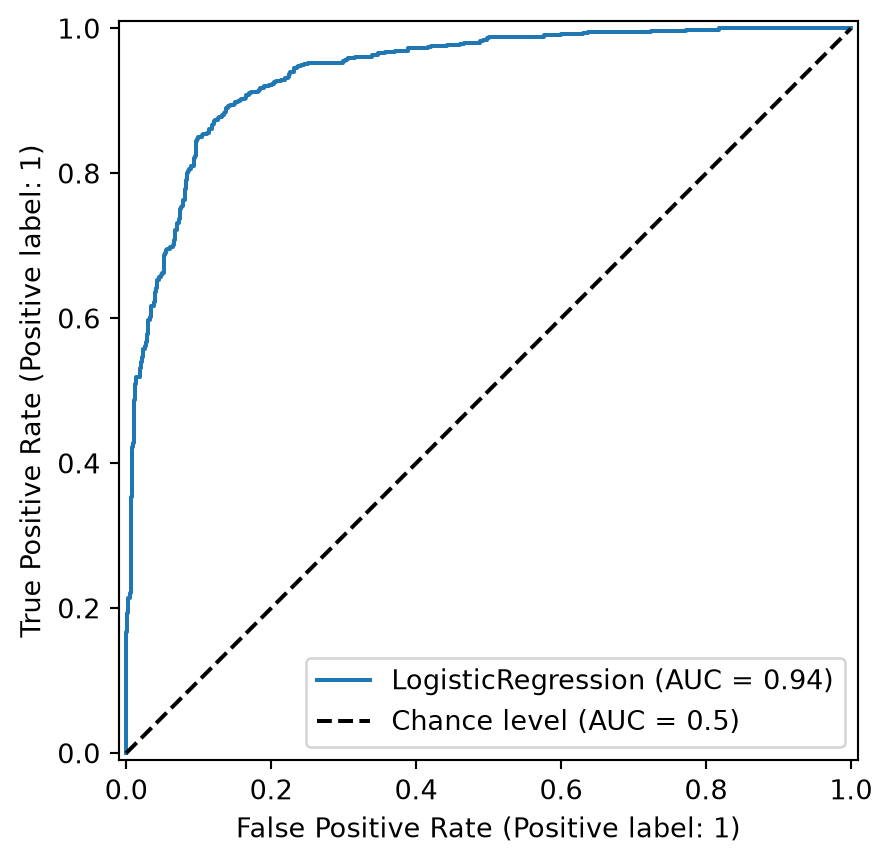
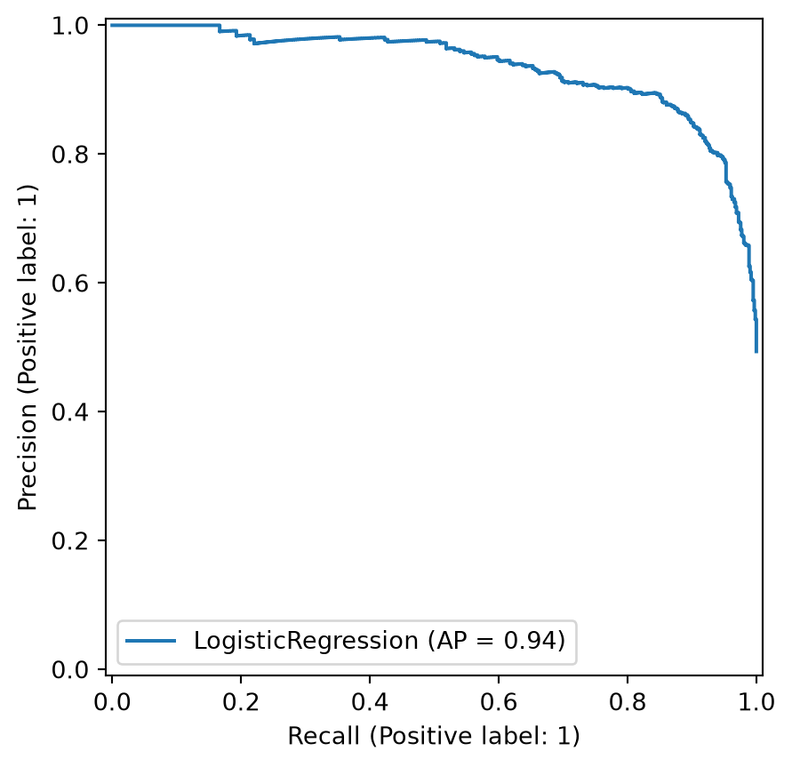

Consider a disease prediction model. Suppose the hypothetical disease has a 5% prevalence in the population
The given model converges on the solution of predicting that nobody has the disease (i.e., the model predicts “0” for every observation)
Our model is 95% accurate
Yet, public health officials are stumped
Scenario: Handwritten Digits
Consider a model to identify handwritten digits. All digits are equally probable and equally represented in the training and test datasets.
The model correctly identifies all of the digits, except for digit \(5\), classifying half of the \(5\)s samples as \(6\) and the other half is correctly identified
The accuracy of this model is \(95\%\). Is this information enough to determine whether the model is good or not?
Extended Confusion Matrix
Confusion Matrices: A Deeper Look
Pros
Intuitive: Easy to understand the concept of correct and incorrect classifications.
Standardized Metrics: Forms the basis for many standard evaluation metrics like precision, recall, and F1-score.
Error Analysis: Helps to identify which classes are being confused with each other.
Cons
Scalability: Can be hard to visualize and interpret for a large number of classes. The matrix becomes a large, dense grid.
Probabilistic Output: Doesn’t directly show the model’s confidence in its predictions. A prediction that was ‘barely wrong’ is treated the same as one that was ‘very wrong’.
Instance-level Detail: Hides instance-level details. You can’t see individual errors.
The “Squares” paper by Ren et al. (2016) points out that confusion matrices can obscure important patterns in model behavior and make it hard to prioritize what to fix.
ROC analysis is another way to assess a classifier’s output
ROC analysis developed out of radar operation in the second World War, where operators were interested in detecting signal (enemy aircraft) versus noise
We create an ROC curve by plotting the true positive rate (TPR) against the false positive rate (FPR) at various thresholds
True Positive Rate (TPR), also known as Recall or Sensitivity, is the proportion of actual positives that are correctly identified as such (TP / (TP + FN)).
False Positive Rate (FPR) is the proportion of actual negatives that are incorrectly identified as positive (FP / (FP + TN)).
ROC Curve
ROC Curve
ROC Curve
Area under an ROC curve (AUC)
ROC curve in sklearn
import matplotlib.pyplot as pltfrom sklearn.metrics import RocCurveDisplayRocCurveDisplay.from_estimator(clf, X_test, y_test, plot_chance_level=True)plt.show()

Multiclass ROC curve
Micro-average: Aggregate contributions of all classes to calculate the metric. Useful if there is class imbalance.
Macro-average: Compute the metric for each class separately, then take average (treats all classes equally)
ROC Curves: Strengths and Limitations
What they show: True Positive Rate (TPR) vs. False Positive Rate (FPR)
Best for: Balanced datasets
Limitation: Can be misleading on imbalanced datasets because the FPR can be very small, even with a large number of false positives
Precision-Recall (PR) Curves
What they show: Precision vs. Recall (TPR)
Best for: Imbalanced datasets
Advantage: A model that has high precision and high recall is truly a good model
Research insight: As mentioned in “Visual methods for analyzing probabilistic classification data” by Alsallakh et al. (2014), PR curves are more informative than ROC curves when dealing with imbalanced datasets
Precision-Recall curve in sklearn
import matplotlib.pyplot as pltfrom sklearn.metrics import PrecisionRecallDisplayPrecisionRecallDisplay.from_estimator(clf, X_test, y_test)plt.show()

Precision-Recall Curve
Visual Analytics Systems for Model Performance
Squares (2016)
Alsallakh et al. (2014)
Alsallakh et al. (2014)
Beauxis-Aussalet and Hardman (2014)
Beauxis-Aussalet and Hardman (2014)
EnsembleMatrix (2009)
Calibration
What is calibration?
When performing classification, we often are interested not only in predicting the class label, but also in the probability of the output
This probability gives us a kind of confidence score on the prediction
However, a model can separate the classes well (having a good accuracy/AUC), but be poorly calibrated. In this case, the estimated class probabilities are far from the true class probabilities
We can calibrate the model, changing the scale of the predicted probabilities
Calibration - Forecast Example
Weather forecasters started thinking about calibration a long time ago (Brier, 1950): a forecast of “70% chance of rain” should be followed by rain 70% of the time. Let’s consider a small toy example:
This forecast is doing well at predicting the rain:
“10% chance of rain” was a slight over-estimate: \((\bar{y} = 0/2 = 0\%)\)
“40% chance of rain” was a slight under-estimate: \((\bar{y} = 1/2 = 50\%)\)
“70% chance of rain” was a slight over-estimate: \((\bar{y} = 2/3 = 67\%)\)
“90% chance of rain” was a slight under-estimate: \((\bar{y} = 1/1 = 100\%)\)
Underconfidence: a classifier thinks it’s worse at separating classes than it actually is.
Underconfidence typically gives sigmoidal distortions
To calibrate these means to pull predicted probabilities away from the centre
Overconfidence: a classifier thinks it’s better at separating classes than it actually is
Here, distortions are inverse-sigmoidal
Calibrating these means to push predicted probabilities toward the centre
A classifier can be overconfident for one class and underconfident for the other
Reliability Diagram in sklearn
Calibration metrics
Let \(N\) be the total number of samples, \(B\) the number of bins, \(n^b\) the samples in bin \(b\), \(acc(b)\) the fraction of positives in bin \(b\), and \(conf(b)\) the average predicted probability in bin \(b\).
The 2017 trend did not continue: the most accurate recent models (ViT, MLP-Mixer) are also among the best calibrated
Proper Scoring Rules
Proper scoring rules are calculated at the observation level, whereas ECE is binned
Think of them as putting each item in its separate bin, then computing the average of some loss for each predicted probability and its corresponding observed label
An intuitive way to decompose proper scoring rules is into refinement and calibration losses
Refinement loss: is the loss due to producing the same probability for instances from different classes
Calibration loss: is the loss due to the difference between the probabilities predicted by the model and the proportion of positives among instances with the same output
Calibration Techniques
Parametric calibration involves modelling the score distributions within each class
Platt scaling: Logistic calibration can be derived by assuming that the scores within both classes are normally distributed with the same variance (Platt, 2000)
Beta calibration: employs Beta distributions instead, to deal with scores already on a [0, 1] scale (Kull et al., 2017)
Dirichlet calibration for more than two classes (Kull et al., 2019)
Non-parametric calibration often ignores scores and employs ranks
Isotonic regression fits a non-parametric isotonic regressor, which outputs a step-wise non-decreasing function
Platt scaling
Assumes the calibration curve can be corrected by applying a sigmoid to the raw predictions. This means finding \(\mathbf{A}\) and \(\mathbf{b}\) via MLE:
Nixon, J., Dusenberry, M. W., Zhang, L., Jerfel, G., & Tran, D. (2019, June). Measuring Calibration in Deep Learning. In CVPR Workshops (Vol. 2, No. 7).
Vaicenavicius, J., Widmann, D., Andersson, C., Lindsten, F., Roll, J., & Schön, T. (2019, April). Evaluating model calibration in classification. In The 22nd International Conference on Artificial Intelligence and Statistics (pp. 3459-3467). PMLR.